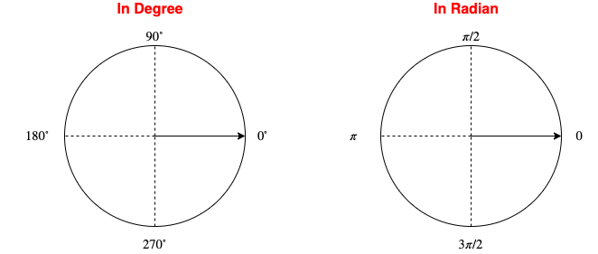
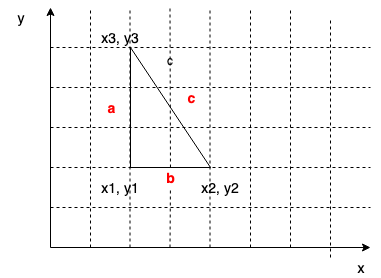

public class Ch4_1
{
public static void main(String [] args)
{
double angle = 90;
//Math.toDegrees
System.out.println("Radian 3.14 is Degree "+Math.toDegrees(3.14));
//Math.toRadians
System.out.println("Degree 90 is Degree "+Math.toRadians(90));
//Math.PI and Math.sin
double radian = angle/180*Math.PI;
System.out.println("sin(90) = "+Math.sin(radian));
//or
radian = Math.toRadians(90);
System.out.println("sin(90) = "+Math.sin(radian));
//Math.asin
double v = Math.sin(0);
System.out.println(Math.asin(v)+Math.toDegrees(Math.asin(v))); //0.0
}
}

| In Math | In Java |
|---|---|
| sin(90°) | sin(π/2) |
| cos(180°) | cos(π) |
public class Ch4_2
{
public static void main(String [] args)
{
System.out.println(Math.exp(2)); //e^2
System.out.println(Math.log(10));
System.out.println(Math.log10(100)); //2
System.out.println(Math.pow(10, 2)); // 100
System.out.println(Math.sqrt(100)); // 10
}
}
public class Ch4_3 {
public static void main(String[] args) {
//ceil
System.out.println(Math.ceil(2.1)); // 3.0
System.out.println(Math.ceil(-2.1)); // -2.0
//floor
System.out.println(Math.floor(2.1)); // 2.0
System.out.println(Math.floor(-2.1)); // -3.0
//rint
System.out.println(Math.rint(2.1)); // 2.0
System.out.println(Math.rint(2.6)); // 3.0
System.out.println(Math.rint(3.5)); // 4.0
System.out.println(Math.rint(2.5)); // 2.0
//round
System.out.println(Math.round(3.1)); // 3.0
System.out.println(Math.round(4.5)); // 5.0
System.out.println(Math.round(5.6)); // 6.0
}
}
public class Ch4_4
{
public static void main(String [] args)
{
//Math.min
System.out.println(Math.min(10, 100));
//Math.max
System.out.println(Math.max(10, 100));
//Math.abs
System.out.println(Math.abs(-2));
}
}
public class Ch4_5
{
public static void main(String [] args)
{
int num;
num = (int)(Math.random()*10); // [0, 9]
System.out.println(num);
}
}

import java.util.Scanner;
public class E4_2
{
public static void main(String [] args)
{
//input the coordinates of the three points of the right triangle
Scanner input = new Scanner(System.in);
double x1, y1, x2, y2, x3, y3;
//add your code here
//calcualte a, b, c
//add your code here
//calculate the area of the triangle
//add your code here
//print out the area
//add your code here
}
}
public class Ch4_6
{
public static void main(String [] args)
{
char c = 'a';
System.out.println(c);
//convert char to int
System.out.println((int)('a'));
//convert int to char
System.out.println((char)97);
}
}
public class Ch4_7
{
public static void main(String [] args)
{
char var = 'a';
System.out.println(var == 'a'); // true
System.out.println('a' > 'A'); // true
System.out.println(Character.isDigit('6')); // true
System.out.println(Character.isLetter('a')); // true
System.out.println(Character.isLetterOrDigit('*')); // false
System.out.println(Character.isLowerCase('a')); // true
System.out.println(Character.isUpperCase('A')); // true
System.out.println(Character.toLowerCase('A')); // a
System.out.println(Character.toUpperCase('a')); // A
}
}
public class Ch4_8
{
public static void main(String [] args)
{
System.out.println("Hello \"Lin\" ..."); // escape \*
System.out.println("Hello Lin\n Chen ...");
System.out.println("Hello Lin\t Chen ...");
System.out.printf("Hello %10s\n %10s ...", "Lin", "Chen");
}
}
public class Ch4_9
{
public static void main(String [] args)
{
System.out.println('\u03b1'); // alpha
System.out.println('\u03b2'); // beta
System.out.println('\u03b3'); // gama
}
}
import java.util.Scanner;
public class E2
{
public static void main(String [] args)
{
Scanner input = new Scanner(System.in);
//Read a character from the keyboard
System.out.print("Please enter a character:");
char c = input.next().charAt(0);
//Use if ... else ... to check if the entered character is a letter or not
//add your code here
//Compare the entered character with 'A', if yes, print out "Match"
//add your code here
}
}
public class Ch4_10
{
public static void main(String [] args)
{
String message = "Welcome to Java"; // String, the first letter is upper case
//length
System.out.println(message.length()); // 15
//charAt, access a specific character by index
System.out.println(message.charAt(6)); // character e
//concat
System.out.println("hello ".concat("world!")); // hello world!
System.out.println("hello "+"world!"); // hello world!
String message_2 = "!";
System.out.println(message+message_2); // Welcome to Java!
//toUpperCase
System.out.println(message.toUpperCase()); // WELCOME TO JAVA
//toLowerCase
System.out.println(message.toLowerCase()); // welcome to java
//trim, remove leading and trailing whitespaces
String message_3 = " Hello World ";
System.out.println(message_3);
System.out.println(message_3.trim());
}
}
import java.util.Scanner;
public class E5
{
public static void main(String [] args)
{
Scanner input = new Scanner(System.in);
//Read a string from the keyboard
System.out.print("Please enter a string:");
String str = input.nextLine(); //read the entire line as a string
//print out the length of the entered string
//add your code here
//print out the second character of the string
//add your code here
//print out the capitalized string
//add your code here
//remove the leading and trailing whitespaces
//print out the trimmed string
//add your code here
}
}
import java.util.Scanner;
public class Ch4_16
{
public static void main(String [] args)
{
Scanner input = new Scanner(System.in);
System.out.println("Enter the first string: ");
String s = input.nextLine(); //hello
System.out.println("Enter the second string: ");
String s_2 = input.nextLine(); //hello
String s_3 = s;
System.out.println(s == s_2); // what is the output
System.out.println(s == s_3); // what is the output
}
}
import java.util.Scanner;
public class Ch4_11
{
public static void main(String [] args)
{
Scanner input = new Scanner(System.in);
System.out.println("Enter the first string: ");
String s = input.nextLine(); //hello
System.out.println("Enter the second string: ");
String s_2 = input.nextLine(); //Hello
//equals
System.out.println(s.equals(s_2)); //false
//equalsIgnoreCase
System.out.println(s.equalsIgnoreCase(s_2)); //true
//compareTo
System.out.println(s.compareTo(s_2)); // 0, equals; otherwise, not equal
System.out.println("abc".compareTo("abg")); // what is the output value
//startsWith
System.out.println(s.startsWith("he")); //true
//endsWith
System.out.println(s.endsWith("lo")); //true
//contains
System.out.println(s.contains("el")); //true
}
}
public class Ch4_12
{
public static void main(String [] args)
{
String message = "Hello Lin";
System.out.println("012345678");
System.out.println(message);
//substring(beginIndex)
System.out.println(message.substring(3)); //lo Lin
//substring(beginIndex, endIndex)
//the character indexed by endIndex is excluded
System.out.println(message.substring(3, 8)); //lo Li
}
}
public class Ch4_13
{
public static void main(String [] args)
{
String message = "Hello Lin Hello";
System.out.println("012345678");
System.out.println(message);
//find index of character
//indexOf, return the index of the first occurrence
System.out.println(message.indexOf('l')); //2
//lastIndexOf
System.out.println(message.lastIndexOf('l')); //13
//find index of string
//indexOf, return the index of the first occurrence
System.out.println(message.indexOf("Hello")); //0
//lastIndexof
System.out.println(message.lastIndexOf("Hello")); //10
}
}
public class Ch4_14
{
public static void main(String [] args)
{
int a = Integer.parseInt("100");
double b = Double.parseDouble("3.14");
System.out.println(a);
System.out.println(b);
}
}
public class Ch4_15
{
public static void main(String [] args)
{
System.out.printf("%s is %f feet high\n", "Lin", 6.0);
System.out.printf("%s is %5.2f feet high\n", "Lin", 6.0);
System.out.printf("%6d--%6e\n", 1234, 1234567.263);
}
}
public class E4
{
public static void main(String [] args)
{
//Read user's name
//Read user's weight in pound
//Read user's height in inch
//Calculate BMI
//Print out user information
//Name
//Weight in pound with two significant figures after the decimal point
//Height in feet and inches
//BMI with two significant figures after the decimal point
}
}
Ouput should have the format as the following sample
Name: Lin Chen
Weight: 180.00 1b
Height: 5 feet 11 inches
BMI: 25.00